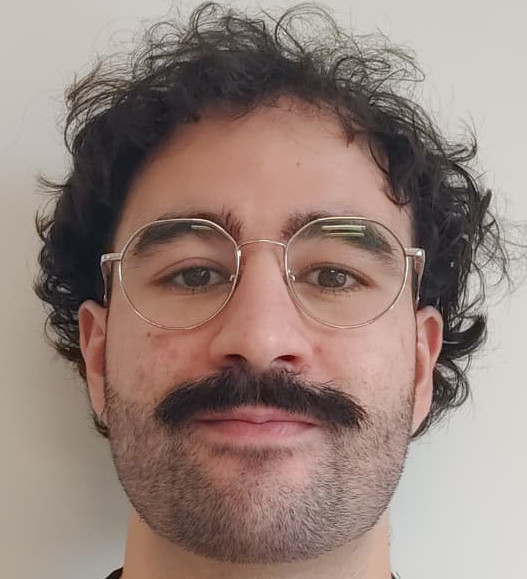
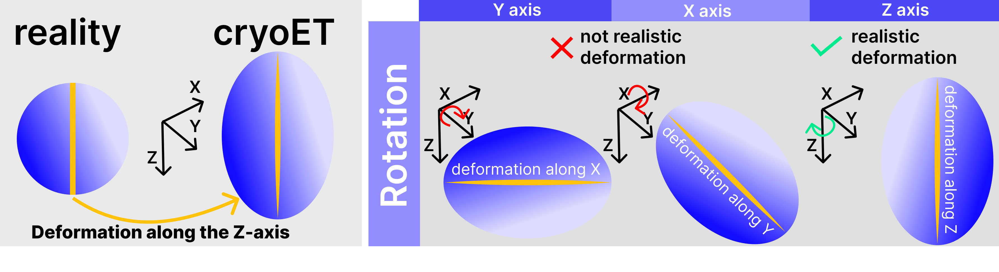
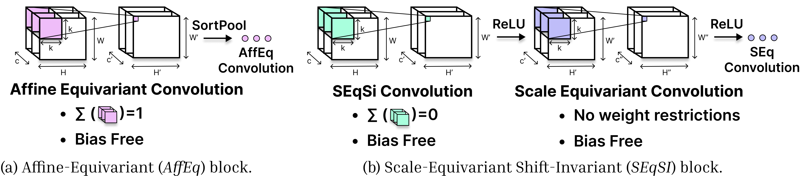

<title>Mounir Messaoudi</title>
<meta name="claude:viewport-fit-sides" content="cover">
<link rel="stylesheet" href="https://fonts.googleapis.com/css2?family=Source+Sans+3:wght@400;600;700&family=Source+Serif+4:wght@500;600&display=swap">
<style>
/* Layout: single centered column, like an academic-pages / al-folio home. Top nav, intro with portrait on the right, news, selected publications, footer. One view per hash: home, cv, publications, teaching. */
:root {
  --bg: #ffffff;
  --surface: #f4f6f9;
  --fg: #1d232b;
  --muted: #5b6672;
  --line: #dde3ea;
  --accent: #1f3a5f;
  --accent-soft: #e6edf6;
  --on-accent: #ffffff;
  --venue: #6a3fb0;
  --venue-bg: #f0eafa;
  --col: 860px;
  --font-display: "Source Serif 4", Georgia, "Times New Roman", serif;
  --font-body: "Source Sans 3", system-ui, -apple-system, "Segoe UI", Helvetica, Arial, sans-serif;
}
@media (prefers-color-scheme: dark) {
  :root:not([data-theme="light"]) {
    --bg: #12161b;
    --surface: #1a2027;
    --fg: #e6eaef;
    --muted: #9aa5b1;
    --line: #2b343e;
    --accent: #8fb3e6;
    --accent-soft: #1f2a38;
    --on-accent: #12161b;
    --venue: #c1a8f5;
    --venue-bg: #2a2140;
    color-scheme: dark;
  }
}
:root[data-theme="dark"] {
  --bg: #12161b;
  --surface: #1a2027;
  --fg: #e6eaef;
  --muted: #9aa5b1;
  --line: #2b343e;
  --accent: #8fb3e6;
  --accent-soft: #1f2a38;
  --on-accent: #12161b;
  --venue: #c1a8f5;
  --venue-bg: #2a2140;
  color-scheme: dark;
}

* { box-sizing: border-box; }
body {
  background: var(--bg);
  color: var(--fg);
  font-family: var(--font-body);
  font-size: 17px;
  line-height: 1.65;
}
body::before {
  content: "";
  position: fixed;
  inset: 0 0 auto;
  height: env(safe-area-inset-top, 0px);
  z-index: 10;
  background: var(--bg);
}
a { color: var(--accent); text-decoration-thickness: 1px; text-underline-offset: 3px; }
a:hover { text-decoration-thickness: 2px; }
:focus-visible { outline: 2px solid var(--accent); outline-offset: 2px; border-radius: 2px; }

.wrap {
  max-width: var(--col);
  margin: 0 auto;
  padding-left: max(16px, env(safe-area-inset-left, 0px));
  padding-right: max(16px, env(safe-area-inset-right, 0px));
}

/* Top navigation */
.masthead {
  position: sticky;
  top: env(safe-area-inset-top, 0px);
  z-index: 20;
  background: var(--bg);
  border-bottom: 1px solid var(--line);
}
.masthead .wrap { padding-block: 10px; }
.bar { display: flex; align-items: center; justify-content: space-between; gap: 10px; flex-wrap: wrap; }
nav { display: flex; gap: 4px; flex-wrap: wrap; }
nav a {
  color: var(--muted);
  text-decoration: none;
  font-weight: 600;
  font-size: 0.95rem;
  padding: 6px 12px;
  border-radius: 4px;
}
nav a:hover { color: var(--fg); background: var(--surface); }
nav a[aria-current="page"] { color: var(--accent); background: var(--accent-soft); }
.theme {
  font: inherit; font-size: 0.88rem; font-weight: 600;
  display: inline-flex; align-items: center; gap: 6px;
  padding: 5px 11px; border: 1px solid var(--line); border-radius: 999px;
  background: var(--surface); color: var(--fg); cursor: pointer;
}
.theme:hover { border-color: var(--accent); color: var(--accent); }
.theme svg { width: 15px; height: 15px; flex: none; }

/* Content */
main { padding-block: 40px 56px; }
.view[hidden] { display: none !important; }

/* Intro: text on the left, rectangular portrait on the right */
.intro { display: grid; grid-template-columns: minmax(0, 1fr) 270px; gap: 40px; align-items: start; }
.intro-text { min-width: 0; }
.name { font-family: var(--font-display); font-weight: 600; font-size: 2.7rem; line-height: 1.1; margin: 0 0 6px; text-wrap: balance; }
.role { color: var(--muted); margin: 0 0 22px; font-size: 1.02rem; }
.portrait { margin: 6px 0 0; }
.portrait img { display: block; width: 100%; height: auto; max-height: 420px; object-fit: cover; border-radius: 8px; border: 1px solid var(--line); background: var(--surface); }
.portrait figcaption { margin-top: 8px; font-size: 0.9rem; color: var(--muted); }
.avail { margin: 18px 0 0; padding: 10px 14px; border-radius: 6px; background: var(--accent-soft); font-size: 0.97rem; }
.avail strong { color: var(--accent); }

h2.title { font-family: var(--font-display); font-weight: 600; font-size: 2rem; line-height: 1.2; margin: 0 0 20px; padding-bottom: 12px; border-bottom: 1px solid var(--line); }
h3 { font-family: var(--font-display); font-weight: 600; font-size: 1.45rem; margin: 40px 0 14px; }
h3:first-of-type { margin-top: 8px; }
.intro + h3 { margin-top: 44px; }
p { margin: 0 0 14px; }
ul.plain { margin: 0; padding-left: 1.2em; }
ul.plain li { margin-bottom: 6px; }
.chips { display: flex; flex-wrap: wrap; gap: 8px; list-style: none; padding: 0; margin: 4px 0 0; }
.chips li { padding: 3px 11px; background: var(--surface); border: 1px solid var(--line); border-radius: 999px; font-size: 0.93rem; }

/* News list */
.news { display: grid; grid-template-columns: 84px minmax(0, 1fr); gap: 12px 18px; margin: 0; }
.news dt { color: var(--muted); font-size: 0.93rem; font-weight: 600; font-variant-numeric: tabular-nums; padding-top: 1px; }
.news dd { margin: 0; }
.news dd b { font-weight: 700; }
.news .venue-tag { font-size: 0.8rem; padding: 0 8px; white-space: nowrap; }
.news .badge { font-size: 0.7rem; padding: 1px 8px; vertical-align: 1px; }
.flag { height: 0.85em; width: auto; vertical-align: -0.1em; margin-left: 2px; border-radius: 2px; box-shadow: 0 0 0 1px var(--line); }

/* CV entries */
.entry { padding: 0 0 20px; }
.entry + .entry { border-top: 1px solid var(--line); padding-top: 18px; }
.entry-head { display: flex; justify-content: space-between; gap: 4px 16px; flex-wrap: wrap; align-items: baseline; }
.entry-title { font-weight: 700; margin: 0; }
.entry-date { color: var(--muted); font-size: 0.93rem; font-variant-numeric: tabular-nums; }
.entry-sub { color: var(--muted); font-style: italic; margin: 0 0 6px; font-size: 0.97rem; }
.entry ul { margin: 6px 0 0; padding-left: 1.2em; }
.entry li { margin-bottom: 4px; }

/* Publications: purple venue tag, image below */
.pub { padding: 0 0 24px; }
.pub + .pub { border-top: 1px solid var(--line); padding-top: 22px; }
.pub-top { margin: 0 0 8px; }
.venue-tag {
  font-size: 0.85rem; font-weight: 700; letter-spacing: 0.02em;
  padding: 2px 10px; border-radius: 4px;
  color: var(--venue); background: var(--venue-bg); border: 1px solid var(--venue);
}
.pub-title { font-weight: 700; margin: 0 0 2px; font-size: 1.05rem; text-wrap: balance; }
.pub-title a { color: var(--fg); text-decoration-color: var(--line); }
.pub-title a:hover { color: var(--accent); text-decoration-color: var(--accent); }
.pub-authors { margin: 0 0 2px; }
.pub-authors b { font-weight: 700; }
.pub-venue { margin: 0 0 8px; font-style: italic; color: var(--muted); }
.pub-fig { margin: 4px 0 12px; }
.pub-fig img { display: block; max-width: 100%; max-height: 260px; width: auto; border: 1px solid var(--line); border-radius: 6px; background: #fff; }
.row { display: flex; flex-wrap: wrap; gap: 8px; align-items: center; }
.badge {
  font-size: 0.78rem; font-weight: 700; letter-spacing: 0.04em; text-transform: uppercase;
  padding: 2px 9px; border-radius: 999px; background: var(--accent); color: var(--on-accent);
}
.btn {
  font-size: 0.85rem; font-weight: 600; text-decoration: none;
  padding: 2px 10px; border: 1px solid var(--line); border-radius: 4px; color: var(--fg); background: var(--surface);
}
.btn:hover { border-color: var(--accent); color: var(--accent); }
.also { margin: 8px 0 0; font-size: 0.9rem; color: var(--muted); }

.ref { display: flex; justify-content: space-between; gap: 2px 16px; flex-wrap: wrap; padding: 10px 0; }
.ref + .ref { border-top: 1px solid var(--line); }
.ref .who { font-weight: 700; margin: 0; }
.ref .role-s { color: var(--muted); margin: 0; font-size: 0.95rem; }
.ref .mail { margin: 0; font-size: 0.95rem; overflow-wrap: anywhere; user-select: all; }

/* Hover preview card for paper links */
.preview {
  position: fixed; z-index: 50; left: 0; top: 0; pointer-events: none;
  max-width: min(400px, 80vw); padding: 6px;
  background: var(--bg); border: 1px solid var(--line); border-radius: 8px;
  box-shadow: 0 8px 28px rgba(0, 0, 0, 0.22);
}
.preview img { display: block; max-width: 100%; max-height: 300px; width: auto; height: auto; border-radius: 4px; background: #fff; }
[data-preview] { cursor: pointer; }

/* Footer */
footer { border-top: 1px solid var(--line); color: var(--muted); font-size: 0.92rem; padding-block: 24px 32px; }
.social { display: flex; flex-wrap: wrap; gap: 8px 20px; margin: 0 0 14px; }
.social a { display: inline-flex; align-items: center; gap: 7px; color: var(--fg); text-decoration: none; font-weight: 600; font-size: 0.97rem; }
.social a:hover { color: var(--accent); }
.social svg { width: 20px; height: 20px; flex: none; }
footer p { margin: 0 0 6px; }
footer .contact { color: var(--fg); }
footer .contact span { user-select: all; overflow-wrap: anywhere; }

@media (max-width: 760px) {
  body { font-size: 16.5px; }
  main { padding-block: 28px 44px; }
  .intro { grid-template-columns: minmax(0, 1fr); gap: 22px; }
  .portrait { order: -1; max-width: 340px; }
  .name { font-size: 2.15rem; }
  h2.title { font-size: 1.65rem; }
  .news { grid-template-columns: minmax(0, 1fr); gap: 2px; }
  .news dd { margin-bottom: 12px; }
}
@media (prefers-reduced-motion: no-preference) {
  .view { animation: fade 0.18s ease-out; }
  @keyframes fade { from { opacity: 0.4; } to { opacity: 1; } }
}
</style>
<script>try{var t=localStorage.getItem("theme");if(t==="light"||t==="dark")document.documentElement.setAttribute("data-theme",t)}catch(e){}</script>

<header class="masthead">
  <div class="wrap">
    <div class="bar">
      <nav aria-label="Main">
        <a href="#home" data-nav="home">Home</a>
        <a href="#publications" data-nav="publications">Publications</a>
        <a href="#cv" data-nav="cv">CV</a>
        <a href="#teaching" data-nav="teaching">Teaching</a>
      </nav>
      <button class="theme" id="theme" type="button" aria-label="Switch to night mode"></button>
    </div>
  </div>
</header>

<main class="wrap">

  <!-- HOME -->
  <section class="view" id="view-home" data-view="home">
    <div class="intro">
      <div class="intro-text">
        <h1 class="name">Mounir Messaoudi</h1>
        <p class="role">PhD student, Team SAIRPICO, Inria, University of Rennes · Rennes, France</p>

        <p>PhD student in the <a href="https://www.inria.fr/en/sairpico">SAIRPICO</a> team, supervised by <a href="https://team.inria.fr/serpico/team-members/charles-kervrann-2/">Charles Kervrann</a>. My PhD thesis develops deep learning methods to identify and localize macromolecules in 3D cryo-electron tomograms.</p>

        <p>Prior to my PhD, I completed the Master of Science in Artificial Intelligence <a href="https://www.masteriasd.eu/en/">IASD</a>, after the CY Tech engineering school. My master's thesis, “Automatic quantification of breast cancer aggressiveness with the Ki67 marker on IHC images”, was conducted under the supervision of <a href="https://thomaswalter.github.io/">Thomas Walter</a>.</p>

        <p>My research focuses on <b>biomedical image analysis</b>. The goal is to improve and develop new deep learning methods for the detection and identification of macromolecular complexes. My first paper <a data-preview="images/iclr2026.png" href="https://proceedings.iclr.cc/paper_files/paper/2026/file/c9c54ac0dd5e942b99b2b51c297544fd-Paper-Conference.pdf">(Messaoudi et al., 2026)</a> proposes a method that improves CNN robustness and generalization under photometric perturbations, which are common in the image acquisition process in biomedical imaging.</p>

        <p>My main scientific interests include image analysis, and more specifically applications related to medicine. I enjoy interacting with biologists and physicians to develop methods that improve our knowledge and the diagnosis methods in medicine. I also love learning about new fields that I do not know yet. If you would like to collaborate in these areas, feel free to contact me, I am passionate about it!</p>

        <p>Outside of research, I enjoy rowing, alone at sunset and in a crew to cross the rivers of Europe! Paris done, next one Amsterdam!</p>

        <p class="avail"><strong>Available from September 2027</strong></p>
      </div>
      <figure class="portrait">
        <!-- Photo: add a file named photo.jpg next to index.html. Without it, this block is removed. -->
        
      </figure>
    </div>

    <h3>Research interests</h3>
    <ul class="chips">
      <li>Deep learning for image analysis</li>
      <li>Biomedical image analysis</li>
      <li>Robustness and invariance</li>
      <li>Domain shift</li>
      <li>Out-of-domain inference</li>
      <li>Cryo-electron tomography</li>
      <li>Particle picking</li>
      <li>Computational pathology</li>
    </ul>

    <h3>Latest news</h3>
    <dl class="news">
      <dt>May 2027</dt>
      <dd>Next stop: <span class="venue-tag">ISBI 2027</span> in Lausanne <svg class="flag" viewBox="0 0 32 32" role="img" aria-label="Switzerland"><rect width="32" height="32" fill="#D52B1E"/><path d="M13 6h6v7h7v6h-7v7h-6v-7H6v-6h7z" fill="#fff"/></svg>, 25–28 May, where I will present our <a data-preview="images/iclr2026.png" href="https://proceedings.iclr.cc/paper_files/paper/2026/file/c9c54ac0dd5e942b99b2b51c297544fd-Paper-Conference.pdf">ICLR paper</a>. See you there!</dd>
      <dt>Oct 2026</dt>
      <dd>Back to teaching at the University of Rennes: <b>Introduction to Computer Vision</b> for the M2 Applied Mathematics and Statistics. Looking forward to meeting the students!</dd>
      <dt>Jul 2026</dt>
      <dd>Presented our <a data-preview="images/iclr2026.png" href="https://proceedings.iclr.cc/paper_files/paper/2026/file/c9c54ac0dd5e942b99b2b51c297544fd-Paper-Conference.pdf">ICLR paper</a> at <span class="venue-tag">CAP &amp; RFIAP 2026</span> in Montpellier.</dd>
      <dt>May 2026</dt>
      <dd>Presented both papers at the <span class="venue-tag">Life Science PhD Symposium</span> (3rd edition).</dd>
      <dt>Apr 2026</dt>
      <dd>Presented our poster <a data-preview="images/iclr2026.png" href="https://proceedings.iclr.cc/paper_files/paper/2026/file/c9c54ac0dd5e942b99b2b51c297544fd-Paper-Conference.pdf"><b>“Designing Affine-Invariant Neural Networks for Photometric Corruption Robustness and Generalization”</b></a> at <span class="venue-tag">ICLR 2026</span> <span class="badge">Poster session</span> in Rio de Janeiro <svg class="flag" viewBox="0 0 60 42" role="img" aria-label="Brazil"><rect width="60" height="42" fill="#009C3B"/><path d="M30 5 55 21 30 37 5 21z" fill="#FFDF00"/><circle cx="30" cy="21" r="9" fill="#002776"/></svg>. Great discussions and a wonderful city!</dd>
      <dt>Apr 2026</dt>
      <dd>Gave an oral presentation of <a data-preview="images/isbi2026.png" href="https://ieeexplore.ieee.org/abstract/document/11515672"><b>“Anisotropy-Aware Strategy for Robust Deep Learning-Based Particle Picking in 3D Cellular Cryo-Electron Tomogram”</b></a> at <span class="venue-tag">ISBI 2026</span> <span class="badge">Oral session</span> in London <svg class="flag" viewBox="0 0 60 30" role="img" aria-label="United Kingdom"><rect width="60" height="30" fill="#012169"/><path d="M0 0 60 30M60 0 0 30" stroke="#fff" stroke-width="6"/><path d="M0 0 60 30M60 0 0 30" stroke="#C8102E" stroke-width="2"/><path d="M30 0v30M0 15h60" stroke="#fff" stroke-width="10"/><path d="M30 0v30M0 15h60" stroke="#C8102E" stroke-width="6"/></svg>.</dd>
      <dt>Jan 2026</dt>
      <dd>Presented our <a data-preview="images/isbi2026.png" href="https://ieeexplore.ieee.org/abstract/document/11515672">ISBI paper</a> at <span class="venue-tag">AI WILD West 2026</span> in Rennes <svg class="flag" viewBox="0 0 45 27" role="img" aria-label="Brittany"><rect width="45" height="27" fill="#fff"/><rect y="0" width="45" height="3" fill="#000"/><rect y="6" width="45" height="3" fill="#000"/><rect y="12" width="45" height="3" fill="#000"/><rect y="18" width="45" height="3" fill="#000"/><rect y="24" width="45" height="3" fill="#000"/><rect width="22" height="15" fill="#fff"/><circle cx="5" cy="3.5" r="1.1" fill="#000"/><circle cx="11" cy="3.5" r="1.1" fill="#000"/><circle cx="17" cy="3.5" r="1.1" fill="#000"/><circle cx="8" cy="8.5" r="1.1" fill="#000"/><circle cx="14" cy="8.5" r="1.1" fill="#000"/><circle cx="5" cy="13" r="1.1" fill="#000"/><circle cx="11" cy="13" r="1.1" fill="#000"/><circle cx="17" cy="13" r="1.1" fill="#000"/></svg>, close to home this time.</dd>
      <dt>2026</dt>
      <dd>Presented the ISBI paper at <span class="venue-tag">IABM 2026</span>. <a href="#publications">All publications</a>.</dd>
    </dl>
  </section>

  <!-- PUBLICATIONS -->
  <section class="view" id="view-publications" data-view="publications" hidden>
    <h2 class="title">Publications</h2>
    <p>Full list on <a href="https://scholar.google.com/citations?user=E_fav18AAAAJ&amp;hl=fr">Google Scholar</a>.</p>

    <article class="pub">
      <div class="row pub-top"><span class="venue-tag">ISBI 2026</span><span class="badge">Oral session</span></div>
      <p class="pub-title"><a data-preview="images/isbi2026.png" href="https://ieeexplore.ieee.org/abstract/document/11515672">Anisotropy-Aware Strategy for Robust Deep Learning-Based Particle Picking in 3D Cellular Cryo-Electron Tomogram</a></p>
      <p class="pub-authors"><b>M. Messaoudi</b>, C. Kervrann</p>
      <p class="pub-venue">2026 IEEE 23rd International Symposium on Biomedical Imaging (ISBI), pp. 1–5, 2026</p>
      <figure class="pub-fig"></figure>
      <div class="row">
        <a class="btn" data-preview="images/isbi2026.png" href="https://ieeexplore.ieee.org/abstract/document/11515672">PDF</a>
        <a class="btn" href="https://doi.org/10.1109/ISBI61048.2026.11515672">DOI</a>
      </div>
      <p class="also">Also presented at IABM 2026, Life Science PhD Symposium (3rd Edition, 2026), and AI WILD West 2026.</p>
    </article>

    <article class="pub">
      <div class="row pub-top"><span class="venue-tag">ICLR 2026</span><span class="badge">Poster session</span></div>
      <p class="pub-title"><a data-preview="images/iclr2026.png" href="https://proceedings.iclr.cc/paper_files/paper/2026/file/c9c54ac0dd5e942b99b2b51c297544fd-Paper-Conference.pdf">Designing Affine-Invariant Neural Networks for Photometric Corruption Robustness and Generalization</a></p>
      <p class="pub-authors"><b>M. Messaoudi</b>, Q. Rapilly, S. Herbreteau, A. Badoual, C. Kervrann</p>
      <p class="pub-venue">International Conference on Learning Representations (ICLR), pp. 124211–124271, 2026</p>
      <figure class="pub-fig"></figure>
      <div class="row">
        <a class="btn" data-preview="images/iclr2026.png" href="https://proceedings.iclr.cc/paper_files/paper/2026/file/c9c54ac0dd5e942b99b2b51c297544fd-Paper-Conference.pdf">PDF</a>
      </div>
      <p class="also">Also presented at CAP &amp; RFIAP 2026 and Life Science PhD Symposium (3rd Edition, 2026).</p>
    </article>
  </section>

  <!-- CV -->
  <section class="view" id="view-cv" data-view="cv" hidden>
    <h2 class="title">CV</h2>

    <h3>Education</h3>
    <div class="entry">
      <div class="entry-head"><p class="entry-title">PhD in Deep Learning and Biomedical Image Analysis</p><span class="entry-date">2024 – 2027 (expected)</span></div>
      <p class="entry-sub">Inria, University of Rennes · SAIRPICO team · Rennes, France</p>
      <ul>
        <li>Thesis topic: deep learning methods for the identification and localization of macromolecules in 3D cryo-electron tomograms.</li>
        <li>Supervisor: Charles Kervrann.</li>
      </ul>
    </div>
    <div class="entry">
      <div class="entry-head"><p class="entry-title">M.Sc. in Artificial Intelligence, Systems, Data (M2 IASD)</p><span class="entry-date">2022 – 2023</span></div>
      <p class="entry-sub">Paris Dauphine University – PSL, with École Normale Supérieure and MINES Paris · Paris, France</p>
    </div>
    <div class="entry">
      <div class="entry-head"><p class="entry-title">M.Sc. 1 in Computer Science and Engineering (Erasmus)</p><span class="entry-date">2021</span></div>
      <p class="entry-sub">Polytechnic University of Milan · Milan, Italy</p>
    </div>
    <div class="entry">
      <div class="entry-head"><p class="entry-title">Engineering Degree, Applied Mathematics and Computer Science (Data Science)</p><span class="entry-date">2017 – 2022</span></div>
      <p class="entry-sub">CY Tech · Cergy, France</p>
    </div>

    <h3>Research and professional experience</h3>
    <div class="entry">
      <div class="entry-head"><p class="entry-title">Research Intern in Computer Vision</p><span class="entry-date">03/2023 – 09/2023</span></div>
      <p class="entry-sub">Institut Curie and Centre for Computational Biology (CBIO), MINES Paris · Paris, France</p>
      <ul><li>Master's thesis: deep learning method to quantify breast cancer aggressiveness from IHC images.</li></ul>
    </div>
    <div class="entry">
      <div class="entry-head"><p class="entry-title">Data Scientist</p><span class="entry-date">09/2021 – 09/2022</span></div>
      <p class="entry-sub">IBM Interactive, an IBM Company · Paris, France</p>
      <ul><li>Graduation thesis (engineering degree): diagnostics and automatic enhancement of IBM Watson chatbots.</li></ul>
    </div>

    <h3>Skills, languages and interests</h3>
    <ul class="plain">
      <li><b>Technical skills:</b> Python, PyTorch, TensorFlow, Git/GitHub.</li>
      <li><b>Languages:</b> French (fluent), English (fluent).</li>
      <li><b>Interests:</b> Rowing (Paris Crossing 2026; Amsterdam Tulip Crossing 2027, planned) and swimming.</li>
    </ul>

    <h3>References</h3>
    <div class="ref">
      <div><p class="who">Charles Kervrann</p><p class="role-s">PhD supervisor</p></div>
      <p class="mail">charles.kervrann@inria.fr</p>
    </div>
    <div class="ref">
      <div><p class="who">Anaïs Badoual</p><p class="role-s">Permanent member of the SAIRPICO team, co-author</p></div>
      <p class="mail">anais.badoual@inria.fr</p>
    </div>
    <div class="ref">
      <div><p class="who">Sébastien Herbreteau</p><p class="role-s">Co-author</p></div>
      <p class="mail">sebastien.herbreteau@ensai.fr</p>
    </div>
  </section>

  <!-- TEACHING -->
  <section class="view" id="view-teaching" data-view="teaching" hidden>
    <h2 class="title">Teaching</h2>
    <div class="entry">
      <div class="entry-head"><p class="entry-title">Introduction to Computer Vision</p><span class="entry-date">2025, 2026</span></div>
      <p class="entry-sub">Lectures · 20 h per year in each programme</p>
      <ul>
        <li>M2 Mathematical Engineering, CY Tech engineering school.</li>
        <li>M2 Applied Mathematics and Statistics, University of Rennes.</li>
      </ul>
    </div>
    <div class="entry">
      <div class="entry-head"><p class="entry-title">Python</p><span class="entry-date">2025</span></div>
      <p class="entry-sub">Practical sessions · L3 Computer Science, ISTIC, University of Rennes</p>
    </div>
  </section>
</main>

<footer>
  <div class="wrap">
    <div class="social">
      <a href="mailto:mounir.messaoudi45@gmail.com"><svg viewBox="0 0 24 24" fill="none" stroke="currentColor" stroke-width="2" stroke-linecap="round" stroke-linejoin="round" aria-hidden="true"><rect x="3" y="5" width="18" height="14" rx="2"/><path d="m3 7 9 6 9-6"/></svg>Email</a>
      <a href="https://www.linkedin.com/in/mounir-messaoudi-9a11271a6"><svg viewBox="0 0 24 24" fill="currentColor" aria-hidden="true"><path d="M20.447 20.452h-3.554v-5.569c0-1.328-.027-3.037-1.852-3.037-1.853 0-2.136 1.445-2.136 2.939v5.667H9.351V9h3.414v1.561h.046c.477-.9 1.637-1.85 3.37-1.85 3.601 0 4.267 2.37 4.267 5.455v6.286zM5.337 7.433a2.062 2.062 0 1 1 0-4.125 2.062 2.062 0 0 1 0 4.125zM7.119 20.452H3.555V9h3.564v11.452zM22.225 0H1.771C.792 0 0 .774 0 1.729v20.542C0 23.227.792 24 1.771 24h20.451C23.2 24 24 23.227 24 22.271V1.729C24 .774 23.2 0 22.222 0h.003z"/></svg>LinkedIn</a>
      <a href="https://scholar.google.com/citations?user=E_fav18AAAAJ&amp;hl=fr"><svg viewBox="0 0 24 24" fill="none" stroke="currentColor" stroke-width="2" stroke-linecap="round" stroke-linejoin="round" aria-hidden="true"><path d="M12 3 2 8l10 5 10-5-10-5z"/><path d="M6 10.5v5c0 1.5 3 3 6 3s6-1.5 6-3v-5"/></svg>Google Scholar</a>
    </div>
    <p class="contact">Best way to reach me is via email: <span>mounir.messaoudi45@gmail.com</span></p>
    <p>© 2026 Mounir Messaoudi · Inria, University of Rennes</p>
  </div>
</footer>

<script>
(function () {
  var views = ["home", "cv", "publications", "teaching"];
  function show() {
    var name = (location.hash || "").replace("#", "");
    if (views.indexOf(name) === -1) name = "home";
    document.querySelectorAll("[data-view]").forEach(function (el) {
      el.hidden = el.getAttribute("data-view") !== name;
    });
    document.querySelectorAll("[data-nav]").forEach(function (a) {
      if (a.getAttribute("data-nav") === name) a.setAttribute("aria-current", "page");
      else a.removeAttribute("aria-current");
    });
    window.scrollTo(0, 0);
  }
  window.addEventListener("hashchange", show);
  show();

  // Light / night mode toggle. Follows the system until the visitor chooses.
  var root = document.documentElement;
  var tbtn = document.getElementById("theme");
  var mq = window.matchMedia("(prefers-color-scheme: dark)");
  var MOON = '<svg viewBox="0 0 24 24" fill="none" stroke="currentColor" stroke-width="2" stroke-linecap="round" stroke-linejoin="round" aria-hidden="true"><path d="M21 12.8A9 9 0 1 1 11.2 3a7 7 0 0 0 9.8 9.8z"/></svg>';
  var SUN = '<svg viewBox="0 0 24 24" fill="none" stroke="currentColor" stroke-width="2" stroke-linecap="round" stroke-linejoin="round" aria-hidden="true"><circle cx="12" cy="12" r="4"/><path d="M12 2v2M12 20v2M4.9 4.9l1.4 1.4M17.7 17.7l1.4 1.4M2 12h2M20 12h2M4.9 19.1l1.4-1.4M17.7 6.3l1.4-1.4"/></svg>';
  function isDark() {
    var t = root.getAttribute("data-theme");
    return t ? t === "dark" : mq.matches;
  }
  function paint() {
    var d = isDark();
    tbtn.innerHTML = (d ? SUN : MOON) + "<span>" + (d ? "Light mode" : "Night mode") + "</span>";
    tbtn.setAttribute("aria-label", d ? "Switch to light mode" : "Switch to night mode");
  }
  tbtn.addEventListener("click", function () {
    var next = isDark() ? "light" : "dark";
    root.setAttribute("data-theme", next);
    try { localStorage.setItem("theme", next); } catch (e) {}
    paint();
  });
  if (mq.addEventListener) mq.addEventListener("change", paint);
  paint();

  // Image preview when hovering (or focusing) a link to a paper.
  var pv = document.createElement("div");
  pv.className = "preview";
  pv.hidden = true;
  var pimg = document.createElement("img");
  pimg.alt = "";
  pv.appendChild(pimg);
  document.body.appendChild(pv);
  var cur = null;
  function place(x, y) {
    var w = pv.offsetWidth, h = pv.offsetHeight;
    var nx = x + 18, ny = y + 18;
    if (nx + w > window.innerWidth - 8) nx = x - w - 18;
    if (nx < 8) nx = 8;
    if (ny + h > window.innerHeight - 8) ny = y - h - 18;
    if (ny < 8) ny = 8;
    pv.style.left = nx + "px";
    pv.style.top = ny + "px";
  }
  function showFor(a, x, y) {
    cur = a;
    var src = a.getAttribute("data-preview");
    if (pimg.getAttribute("src") !== src) { pv.hidden = true; pimg.setAttribute("src", src); }
    if (pimg.complete && pimg.naturalWidth > 0) { pv.hidden = false; place(x, y); }
  }
  function hide() { cur = null; pv.hidden = true; }
  pimg.addEventListener("load", function () {
    if (cur) { pv.hidden = false; var r = cur.getBoundingClientRect(); place(lastX || r.left, lastY || r.bottom); }
  });
  pimg.addEventListener("error", function () { pv.hidden = true; });
  var lastX = 0, lastY = 0;
  document.addEventListener("mouseover", function (e) {
    var a = e.target.closest && e.target.closest("[data-preview]");
    if (!a || a === cur) return;
    lastX = e.clientX; lastY = e.clientY;
    showFor(a, e.clientX, e.clientY);
  });
  document.addEventListener("mousemove", function (e) {
    lastX = e.clientX; lastY = e.clientY;
    if (cur && !pv.hidden) place(e.clientX, e.clientY);
  });
  document.addEventListener("mouseout", function (e) {
    if (!cur) return;
    if (e.relatedTarget && cur.contains(e.relatedTarget)) return;
    hide();
  });
  document.addEventListener("focusin", function (e) {
    var a = e.target.closest && e.target.closest("[data-preview]");
    if (!a) return;
    var r = a.getBoundingClientRect();
    lastX = r.left; lastY = r.bottom;
    showFor(a, r.left, r.bottom);
  });
  document.addEventListener("focusout", hide);
  window.addEventListener("hashchange", hide);
})();
</script>
